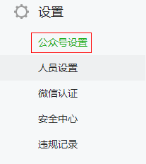
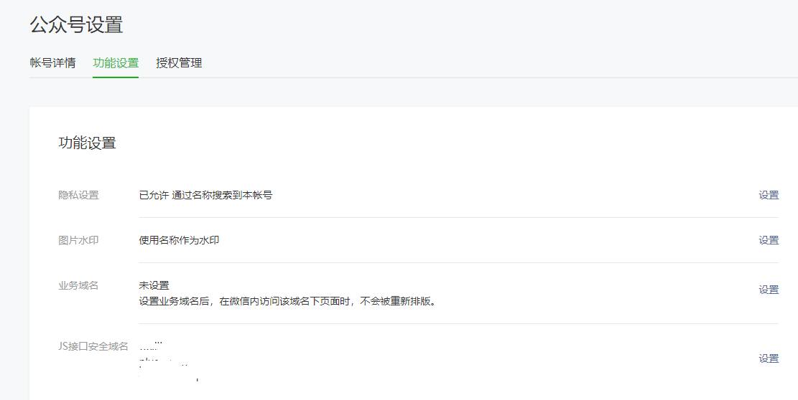
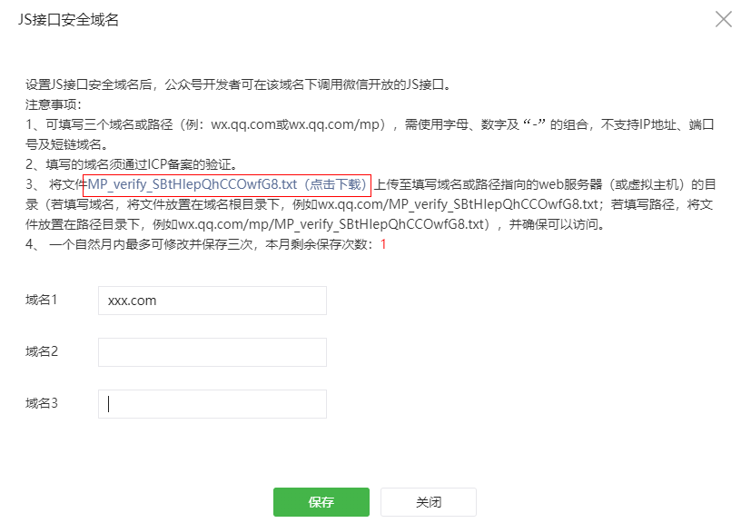

客户要求可以直接识别标签二维码对某些仪器设备进行管理，类似于淘宝搜索框可以直接拍照搜索商品一样。前面已经做了一个网页调用摄像头识别二维码的功能，此功能有两个缺陷：
以上两点相加就相当不好用了。
鉴于我们的系统已经集成到了微信公众号，所以准备调用微信扫码（只有在微信内打开的页面才能使用微信扫码）。
参照官方文档
打开公众号设置

选择功能设置

添加JS接口安全域名，注意你添加的域名目录下面上次图中微信指定的文件，如果文件没在根目录，域名需要填写到子目录

使用vs2019创建默认的asp.net mvc项目
在index.cshtml页面中使用的页面引用js
<script src="http://res.wx.qq.com/open/js/jweixin-1.1.0.js"></script>
$(function () {
/**
* 判断是否微信内部打开页面
* */
function isWeiXin() {
var ua = window.navigator.userAgent.toLowerCase();
console.log(ua);//mozilla/5.0 (iphone; cpu iphone os 9_1 like mac os x) applewebkit/601.1.46 (khtml, like gecko)version/9.0 mobile/13b143 safari/601.1
if (ua.match(/MicroMessenger/i) == 'micromessenger') {
return true;
}
else {
return false;
}
}
/**
* 只有微信内部页面打开才能用
* */
if (isWeiXin()) {
$.ajax({
type: "post",
url: "/Home/GetSingDataAsync",
data: {
"url": location.href.split('#')[0]
},
dataType: "json",
success: function (data) {
alert(JSON.stringify(data));
wx.config({
debug: true, // 开启调试模式,调用的所有api的返回值会在客户端alert出来，若要查看传入的参数，可以在pc端打开，参数信息会通过log打出，仅在pc端时才会打印。
appId: data.appId, // 必填，公众号的唯一标识
timestamp: data.timestamp, // 必填，生成签名的时间戳
nonceStr: data.nonceStr, // 必填，生成签名的随机串
signature: data.signature,// 必填，签名，见附录1
jsApiList: [
'checkJsApi',
'startRecord',
'stopRecord',
'translateVoice',
'scanQRCode',// 微信扫一扫接口
'openCard'
] // 必填，需要使用的JS接口列表，所有JS接口列表见附录2
});
wx.error(function (res) {
alert("出错了：" + res.errMsg);//这个地方的好处就是wx.config配置错误，会弹出窗口哪里错误，然后根据微信文档查询即可。
});
wx.ready(function () {
wx.checkJsApi({
jsApiList: ['scanQRCode'],
success: function (res) {
//扫描二维码
wx.scanQRCode({
needResult: 1, // 默认为0，扫描结果由微信处理，1则直接返回扫描结果，
scanType: ["qrCode"], // 可以指定扫二维码还是一维码，默认二者都有
success: function (res) {
var result = res.resultStr; // 当needResult 为 1 时，扫码返回的结果
alert(result);//因为我这边是扫描后有个链接，然后跳转到该页面
},
error: function () {
console.log('123');
}
});
}
});
});
},
error: function (url) {
alert("An error occurred!");
}
});
} else {
alert("请使用微信打开");
}
}) public class HomeController : Controller
{
//把APPID和APP_SECRET换成你自己的
private const string APPID = "******";
private const string APP_SECRET = "******";
//为了调试方便我这里第一次把Token和Ticket获取到之后就写死了，应该写入缓存（7200s过期）
private static string Token = "24_cQsz9scwyXLnPaAes5JlfHTfuQ2e3Iw5L8JyWfUpQiMnTk4IToOTZ7dP0Fv190ZHTy5ST--jeuDzYwoUj_hvhSHDX288YYLYVcrmvMzRPwld8ccTTzWGNTKZz53jYKDy5f8U1E886msDPsrwORGbAJABET";
private static string Ticket = "HoagFKDcsGMVCIY2vOjf9qZA_fkPP3enjnT58qu16hzZN-3kwAP0NK6jgQM0jyAc0sK8cxaGkT9_DSgp6cHCpw";
public ActionResult Index()
{
return View();
}
public ActionResult About()
{
ViewBag.Message = "Your application description page.";
return View();
}
public ActionResult Contact()
{
ViewBag.Message = "Your contact page.";
return View();
}
public async Task GetToken()
{
await GetTicketAsync();
}
//获取token和ticket
private async Task<string> GetTicketAsync()
{
var tokenUrl = $"https://api.weixin.qq.com/cgi-bin/token?grant_type=client_credential&appid={APPID}&secret={APP_SECRET}";
var client = new System.Net.WebClient();
client.Encoding = Encoding.UTF8;
client.Headers.Add("Content-Type", "Application/x-www-form-urlencoded");
var responseData = client.UploadData(tokenUrl, "POST", new byte[0]);
var responseText = Encoding.UTF8.GetString(responseData);
var token = JsonConvert.DeserializeAnonymousType(responseText, new { access_token = "", expires_in = "" });
Token = token.access_token;
var ticketUrl = $"https://api.weixin.qq.com/cgi-bin/ticket/getticket?access_token={Token}&type=jsapi";
var ticResponseData = client.UploadData(ticketUrl, "POST", new byte[0]);
var ticResponseText = Encoding.UTF8.GetString(ticResponseData);
var ticket = JsonConvert.DeserializeAnonymousType(ticResponseText, new { errcode = "", errmsg = "", ticket = "", expires_in = "" });
Ticket = ticket.ticket;
return "";
}
//获取签名字符串
public async Task<string> GetSingDataAsync(string url)
{
var sign = new SignData();
sign.appId = APPID;
sign.nonceStr = Create_nonce_str();
sign.timestamp = Create_timestamp();
//var url = Request.Url.AbsoluteUri;
if (url.IndexOf('#') > 0)
{
url = url.Substring(0, url.IndexOf('#'));
}
sign.url = url;
var string1 = "jsapi_ticket=" + Ticket +
"&noncestr=" + sign.nonceStr +
"×tamp=" + sign.timestamp +
"&url=" + sign.url;
//var string1 = GetTestSign();
var sha1 = SHA1.Create();
sign.signature = ByteToHex(sha1.ComputeHash(Encoding.UTF8.GetBytes(string1)));
return JsonConvert.SerializeObject(sign);
}
//测试签名字符串，和微信官方提供的一样，用来测试签名方法是否正确
private string GetTestSign()
{
var nonceStr = "Wm3WZYTPz0wzccnW";
var ticket = "sM4AOVdWfPE4DxkXGEs8VMCPGGVi4C3VM0P37wVUCFvkVAy_90u5h9nbSlYy3-Sl-HhTdfl2fzFy1AOcHKP7qg";
var timestamp = "1414587457";
var url = "http://mp.weixin.qq.com?params=value";
var string1 = "jsapi_ticket=" + ticket +
"&noncestr=" + nonceStr +
"×tamp=" + timestamp +
"&url=" + url;
return string1;
}
/// <summary>
/// 随机字符串
/// </summary>
/// <returns></returns>
private string Create_nonce_str()
{
return Guid.NewGuid().ToString().Substring(0, 8);
}
/// <summary>
/// 时间戳
/// </summary>
/// <returns></returns>
private string Create_timestamp()
{
return (DateTime.Now.Ticks / 100000000).ToString();
}
private string ByteToHex(byte[] hash)
{
var sb = new StringBuilder();
foreach (var b in hash)
{
sb.Append(b.ToString("x2"));
}
return sb.ToString();
}
}代码已上传github
我的博客即将同步至腾讯云+社区，邀请大家一同入驻：https://cloud.tencent.com/developer/support-plan?invite_code=1jyzgtqyi05ky